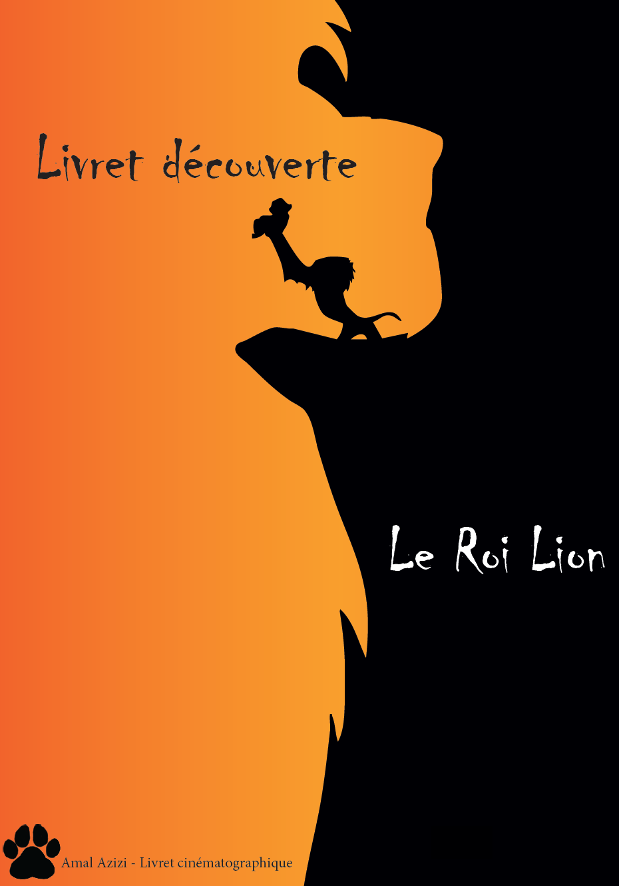

Livret sur le film "Le Roi Lion"
Lors de ma première année, j’ai réalisé un livret cinématographique sur le film "Le Roi Lion", comprenant un storyboard, une analyse filmique détaillée et des éléments visuels destinés à la diffusion en salle et à l’impression papier. Ce projet m’a permis de combiner analyse filmique, design éditorial et réalisation de storyboard, tout en appliquant une méthodologie rigoureuse et organisée.
J’ai commencé par analyser le film en profondeur, en étudiant le parcours psychologique des personnages principaux, leurs interactions et l’utilisation des cadrages et mouvements de caméra. Cette étape m’a permis de comprendre comment la mise en scène, le choix des plans et la couleur influencent la perception du spectateur et le développement narratif. J’ai également identifié des éléments de foreshadowing et les intentions de réalisation, ce qui a enrichi mon analyse et ma compréhension de la narration visuelle.
Deux personnages ont été présentés avec leurs caractéristiques psychologiques, illustrés par des images détourées et des illustrations originales, dans le respect des contraintes du projet. J’ai conçu le storyboard pour visualiser les séquences clés, en détaillant le placement des personnages, les mouvements de caméra et les expressions faciales, afin de rendre les scènes compréhensibles et dynamiques.
Sur le plan technique et graphique, j’ai utilisé InDesign pour la mise en page du livret et Photoshop pour modifier les images et les illustrations. Ce projet m’a permis de développer mes compétences en gestion des images, structuration de l’information et design éditorial, tout en créant un document clair, esthétique et pédagogique.
En réalisant ce livret, j’ai renforcé ma capacité à analyser un film de manière approfondie, à synthétiser les informations importantes et à les présenter visuellement. Ce projet a été une excellente opportunité pour allier réflexion théorique et compétences techniques, tout en produisant un livret complet et professionnel.
